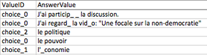

10.10. 回答问题数据¶
您可以查阅某个学生对于某个问题提交的答案、下载课程范围内的答题数据报告，或查阅某个问题的答案立方图。
学生回答问题数据包括图表和报告，这些在edX Insights中同样可用。 更多信息请参阅 Using edX Insights.
10.10.1. 查看某个学生的答案及答题历史记录¶
您可以查看某个学生关于某道题目提交的具体回答内容、回答正确需要尝试的次数， 以及答案提交日期、时间。您可通过用户名锁定学生。
如何查看学生提交的内容：
- 查看课程现况
- 单击“课件”，导航至包含该问题的课程单元
- 查看问题，单击问题下方的“提交历史记录”
- 输入您想查看学生的用户名，单击页面底部的“查看历史记录”，即出现该生回答问题的信息
随便单击查看窗口外的页面即可关闭窗口。
10.10.2. 学生答题分布¶
您可下载学生答题分布数据的CSV文件。文件中显示的答题类型包括以下几类：
- 多项选择 (
<choiceresponse>) - 下拉列表选择 (
<optionresponse>) - 单项选择 (
<multiplechoiceresponse>) - 数字输入 (
<numericalresponse>) - 文本输入 (
<stringresponse>) - 数学表达式输入 (
<formularesponse>)
该文件中，有一行显示的是您学生选择的所有“问题-答案”配对。 例如，一道问题出现了五种意见不同的答案，则文件中会显示五行， 每一行至少代表一名学生的观点。如果您在Studio中设置了带有“随机选择”功能的问题， 则会另外再开一行。详见 问题设置.
CSV文件包含以下几列：
| 列 | 描述 |
|---|---|
| 模块ID | 即提问模块的永久ID |
| 部分ID | 如果提问模块包含多个问题，每个问题都有自己的永久ID。 如果提问模块只包含一个问题，则该值与模块ID相同。 |
| 正确回答 | 答案值 不正确则为0，正确则为1 |
| 回答次数 | 即学生最近提交某个答案的次数。 假设本值为X，如果某个问题的 尝试 值大于1， 则每个学生回答该答案的最大次数应在1~X之间， 哪怕该答案已被尝试多次。 |
| 值ID | 即单选、多选题中每个选项的永久ID。 其他提醒则本值为空。 |
| 答案值 | 即多选、下拉列表选择、单选题选项的文本标签， 以及数字输入、文本输入、表达式输入的值。 |
| 多样化 | 对于设置了“随机选择”的题目，每道题目的变体均有一个“变体”ID。 没有设置“随机选择”的题目则本值为空。即某道问题的显示名 |
| 题目显示名 | 即选项或文本输入字段上方的问题可访问性标签。 |
| 提问 | 在Studio的“简易编辑器”中，该文本通常用两对角括号表示（>>问题<<）。 没有设置访问性标签的问题则本值为空。 |
输入的值按照分类从左到右排列。
10.10.2.1. 下载学生答题分布报告¶
edX服务器会定期自动更新学生答题数据的CSV文件。 教师面板中可以查看最新版本的CSV文件链接。
如何下载最新的学生答题数据文件：
- 查看课程现况
- 单击“导师”→“数据下载”
- 将滚动条拖至页面底部，单击
{course_id}_answer_distribution.csv文件名
10.10.2.2. 关于学生答题分布报告的常见问题¶
以下是一些关于学生答题分布报告的解答。
我的课程没有学生答题分布报告，要怎么生成？
学生答题分布报告是自动生成的，每隔几天会自动更新。 {course_id}_answer_distribution.csv
文件位于所有 {course_id}_grade_report_{date}.csv 文件后面。请一定将滚动条拖到最底部。
为什么报告里漏掉了几道题目？漏掉的题目属于 回答问题数据 一节中列出来的题目类型。
本报告中的问题为2013年十月份至2014年三月份之前的问题，且至少要有一名学生回答。
为什么有些问题看不见“答案值”？
对于单选、多选题而言，只有2014年三月初之后选择的选项才有“答案值”。 2013年十月至2014年3月初之间选择的选项也在报告中，但没有“答案值”。 “值ID”显示的是这些选项的永久ID，比如“choice_1”、“choice_2”。
为什么我看不见有些题目的“Question”值？
“Question”列中的值为该题的可访问性标签。更多关于设置问题标签的信息可以参考 创建练习和工具.
并且，对于设置了“随机选择”的题目，如果2014年三月初之前都没有人给出一个明确的答案，则该答案的“Question”值为空。
我的学生说他们回答了一个问题，报告中确没有显示，这是怎么回事？
本报告只包含“最大尝试次数”超过1次的问题。
题目发布后不久，我对题目做了更改。我怎样才能判断更改之前有哪些学生回答了我的问题？
某道问题的“计数”值反映的是这道问题的历史操作记录。 如果问题发布后您做出了更改，则无论更改前后，您的要求均不能满足。
我在电子制表软件中查看报告时，为什么相同的答案显示在不同的两列中？
有些制表软件为了显示方便，会自动转换CSV报告中的数据。 比如，有些学生回答“0.5”，有些学生回答“ .5”， Excel表格会将这两个答案的“答案值”都显示为“0.5”。 如果您再发现您所说的情况，可以在文本编辑器中查看原始的CSV文件。
为什么我在制表软件中查看报告时，会出现奇怪的字符？
CSV文件使用的是UTF-8编码，但是有些制表软件无法准确识别UTF-8编码。 比如说，某学生的法语答题报告在Microsoft Excel for Mac软件和OpenOffice Calc软件中显示的结果就不同。
Microsoft Excel for Mac 中的答案值:
OpenOffice Calc 中的答案值:
如果您再次发现类似问题，可以试着换一种制表软件，比如LibreOffice或者Apache OpenOffice。
10.10.2.3. 解读学生答题分布报告¶
您可以使用答题分布报告了解学生对于作业内容的反馈，这能帮助您优化课程结构，完善课件及提问模块。
比方说，您设计了一道文字输入题，正确答案只设置了一个， 即“Warfarin”，当您生成答题分布报告后，您发现大部分学生都一字不差地答对了您的问题， 因为“正确回答”列中显示了“1”。

但是，您在查看报告时，您未设置的其他学生的答案将被标记为正确的。 您也可以认为是正确（或不正确）的。在正确答案列中显示其他被标记为不正确的答案。 但是为了课程未来循环，您也许想校订问题或者更新问题来评估正确答案的其他变形。
很多制表应用软件提供数据图像化选择，比如图表或图形。 图表帮助您更容易地找出学生普遍误解的内容。

在本例中，报告的打开方式为Microsoft Excel。 您可以将“答案值”和“计数”两列值并在一起，选择您需要制作图表的单元格域， 单击“图表”工具栏，选择您想要的图标类型，即可制作图表，显示不同答案与学生人数的数量关系。
Note
使用图表功能时，请参考所使用软件的操作指南。 在不同的软件中，您可能需要微调表格，比如重排纵列，等等。 在开始调整之前，记得将原文件备份，以防意外。
您可以根据学生常犯的错误调整课程内容。本例中，您可以根据正确性为“0”的答案调整将来的课件。
10.10.3. 查看某个问题的得分立方图¶
您可以查看某道问题的得分分布图表。
Note
您需要知道问题的ID，才能查看得分分布。您可以将ID前缀带有/problem/的问题制成得分立方图。详见 查找某个问题的位置ID.
如何显示得分立方图：
查看课程现况
单击“导师”→“分析”
在“得分分布”区域，使用问题ID选择一个问题
“分析”页面会自动显示该问题的得分分布立方图。
10.10.3.1. 如何解读得分立方图¶
得分立方图提供以下信息
- X轴显示的是学生回答该问题的未加权得分。 尽管X轴中含有小数点，但是所有得分都为整数。 每个着色块左侧的整数值即为该题得分。
- Y轴显示的是回答问题并提交答案的学生人数。
- 图表上方显示的是“得分学生”的人数。这个数值即该问题数据库记录中的数值： 这个数值即该问题数据库记录中的数值：它不仅包括回答问题、 得到评分的学生人数，也包括打开问题，但没有做题的学生人数。
- edX服务器大概每隔一周会更新一次得分立方图。 这项更新的频率要低于学生答题分布报告的频率， 所以，在某一特定时间内， 得分立方图中显示的学生数量与答题分布报告“计数”一栏显示的数量可能会有出入。